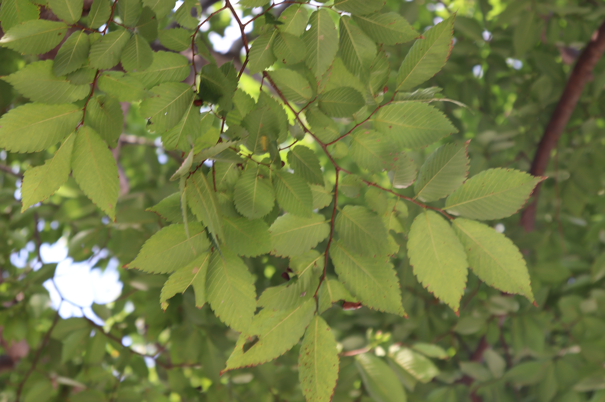

쌍떡잎식물 쐐기풀목 느릅나무과
느티나무(Zelkova serrata)
“우리나라 대부분의 지역에 자라는 낙엽교목”
높이 약 30m, 지름 약 3m에 달하는 나무로 5월에 피는 가지의 잎겨드랑이에서 난 꽃이 있다.
수꽃 : 4~6장의 꽃덮이조각과 4~6개의 수술
암꽃 : 암술대가 2개로 나누어진 1개의 암술
잎은 어긋나고 긴 타원 모양 또는 달걀 모양이며 표면이 매우 거칠거칠하며 끝이 점차 뾰족해지고 길이가 2∼12cm, 폭이 1∼5cm이다.